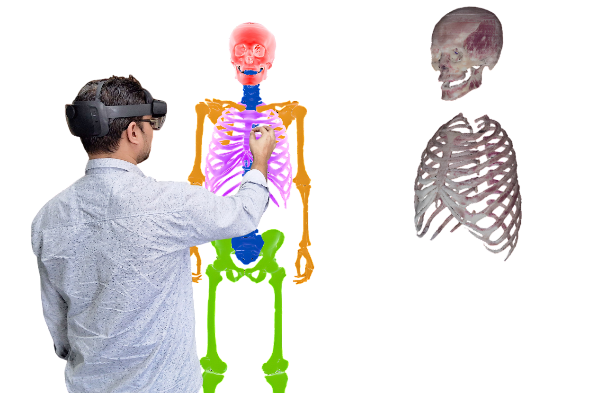
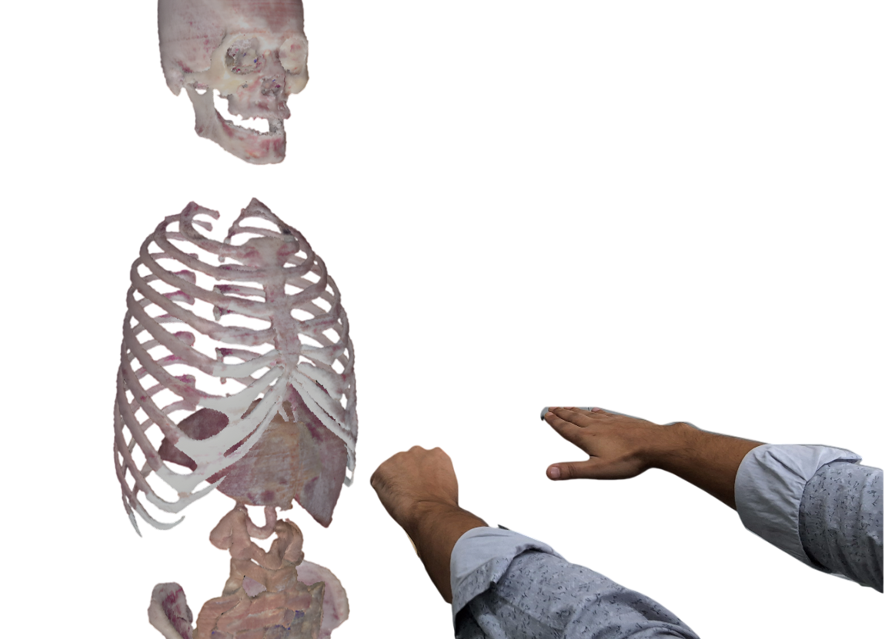
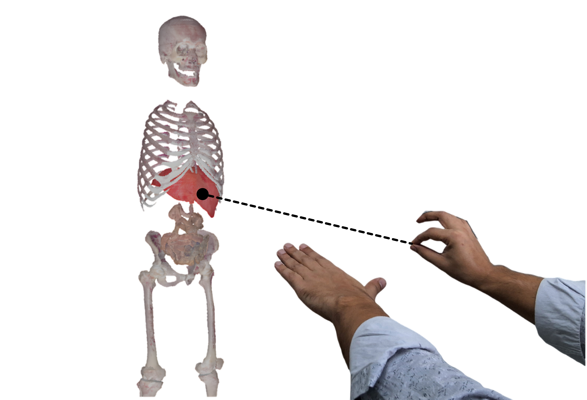

Holoview: Interactive 3D visualization of medical data in AR
Abstract
We present Holoview, an augmented reality (AR) system designed for immersive exploration of human anatomy. Holoview enables users to dynamically select and visualize organs from volumetric data in an interactive 3D environment. Using hand gestures, users can freely navigate full-body anatomy and inspect individual organs, enhancing learning and collaboration. The system is optimized for real-time performance through a remote rendering architecture: a lightweight client (HoloLens) and a high-quality rendering server. To ensure smooth visualization without compromising quality, we use a hybrid rendering scheme, foveated rendering, and network optimizations. Holoview significantly facilitates anatomical structure visualization and promotes an engaging, user-centric learning experience, making it a valuable tool for medical education.
Demo video
System architecture
|  |  |
| Selective rendering in Holoview enables interactive selection and visualization of specific organs using hand gestures. | Navigation enables users to explore the human body model in the AR environment through hand gestures. |
|  |

|
| Bioscope mode is designed to examine a single organ in the body. | A clipped volume visualization is achieved using a hand-controlled clipping plane. |